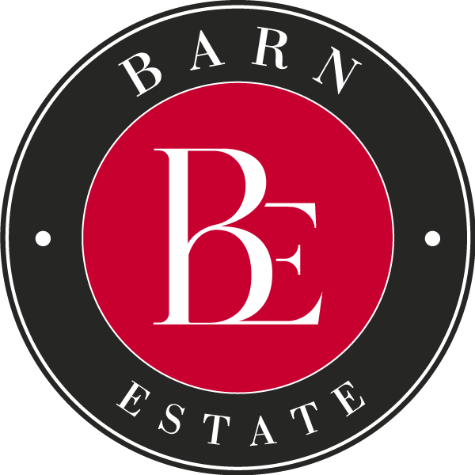

О компании
BARN Estate — агентство элитной недвижимости с многолетним опытом работы на российском рынке. Мы специализируемся на подборе, покупке, продаже и аренде премиальной недвижимости, объединяя глубокое знание рынка, профессиональную экспертизу и индивидуальный подход к каждому клиенту.
Компания продолжает историю команды, которая с 2019 года работает на российском рынке недвижимости. Сегодня BARN Estate развивается под собственным именем, сохраняя высокие стандарты сервиса, накопленный опыт и философию Art de Vivre — искусство жить.
В портфеле BARN Estate представлены эксклюзивные объекты городской и загородной недвижимости Москвы и Подмосковья, Санкт-Петербурга, а также курортных регионов России. Мы работаем с новостройками и вторичным рынком, частными резиденциями, загородными домами, инвестиционными и коммерческими объектами.
В сегменте курортной недвижимости мы предлагаем объекты в наиболее востребованных регионах России, включая Алтай, Архыз, Крым и Шерегеш. В нашем портфеле представлены современные резиденции, апартаменты и загородные дома для сезонного отдыха, постоянного проживания и инвестиций.
Зарубежное направление BARN Estate охватывает востребованные рынки недвижимости ОАЭ, Турции, Таиланда и европейских стран. Подбор объектов и сопровождение сделок за рубежом осуществляются с привлечением профильных партнеров.
Мы помогаем клиентам находить решения, соответствующие их образу жизни, личным предпочтениям и финансовым целям. Благодаря профессиональным связям и многолетнему опыту работы на рынке специалисты BARN Estate предлагают в том числе объекты из закрытых баз, не представленные в открытой продаже.
BARN Estate — больше, чем агентство недвижимости. Для нас философия Art de Vivre воплощается не только в выборе места для жизни, но и в интересе к архитектуре, искусству, культуре и гастрономии.
Офис компании на Петровке, 19 в Москве — пространство для общения с клиентами и партнерами, встреч с представителями бизнеса и творческих индустрий. Мы поддерживаем традицию проведения культурных и деловых мероприятий, объединяющих людей со схожими интересами и взглядами на качество жизни.
Для нас элитная недвижимость — это сочетание эстетики, комфорта и долгосрочной ценности. Мы помогаем клиентам принимать взвешенные решения, сопровождая их на каждом этапе выбора и приобретения недвижимости.